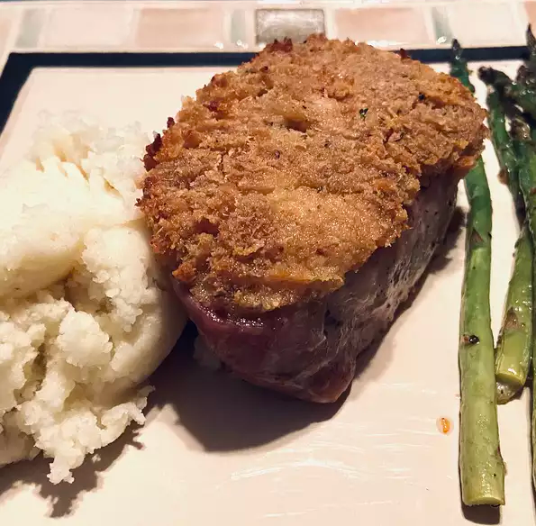

Horseradish Pork Chops

About Horseadish Pork Chops
Pork chops with a creamy horseradish topping. Delicious and easy but not low fat. We always serve with wild rice and green beans on the side.
Per Serving: 331 calories; protein 32.4g; carbohydrates 6.5g; fat 18.8g; cholesterol 111.9mg; sodium 228.7mg. Full Nutrition
Ingredients
- 4 boneless pork chops
- ¼ cup melted butter
- ¼ cup dry bread crumbs
- ¼ cup prepared horseradish
Steps
- Preheat oven to 350 degrees F (175 degrees C). Grease a 9x13-inch baking dish.
- Place the pork chops into the prepared baking dish. Mix together the butter, bread crumbs, and horseradish. Spoon the mixture onto the pork chops, and press down the mixture to completely coat each chop with about 1/4 of the mixture.
- Bake in the preheated oven until the chops are tender, about 45 minutes.
Other recipes:
Back to home